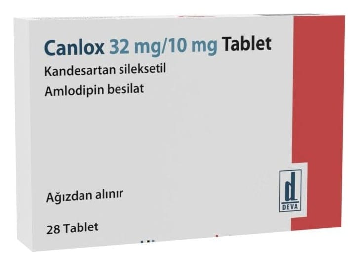

Canlox 32 mg/10 mg Tablet, 28 Tablet

Ne için kullanılır
KT · Bölüm 1CANLOX 28 tabletlik ambalajlarda pazarlanmaktadır. Her bir tablet 32 mg kandesartan sileksetil, 10 mg amlodipine eş değer 13,87 mg amlodipin besilat içerir.
CANLOX, kalsiyum kanal blokerleri sınıfına ait bir madde olan amlodipin ve anjiyotensin II reseptör antagonistleri sınıfına ait bir madde olan kandesartan içerir. Bu maddelerin ikisi de yüksek kan basıncınızın (hipertansiyon) kontrol edilmesini sağlar. Amlodipin, damar düz kas hücrelerinin kalsiyum kanallarını bloke eder; bu da, kan damarlarının kasılmasını önler. Vücut tarafından üretilen bir madde olan anjiyotensin II, kan damarlarının büzülmesine neden olarak kan basıncını artırır. Kandesartan, anjiyotensin II’nin etkisini bloke ederek etki eder. Bu iki mekanizma da kan damarlarınızı gevşetir ve kan basıncınızı düşürür.
CANLOX, kan basıncını tek başına amlodipin veya kandesartan içeren bir ilaç ile yeterince kontrol edilemeyen hastalarda, yüksek kan basıncının (hipertansiyonun) tedavi edilmesi amacıyla kullanılır. Eğer yüksek kan basıncı uzun süre devam ederse beyin, kalp ve böbreklerdeki kan damarlarını tahrip edebilir ve inmeye, kalp yetmezliğine ya da böbrek yetmezliğine yol açabilir. Kan basıncının normal düzeye düşürülmesi, bu bozuklukların ortaya çıkma riskini azaltır.